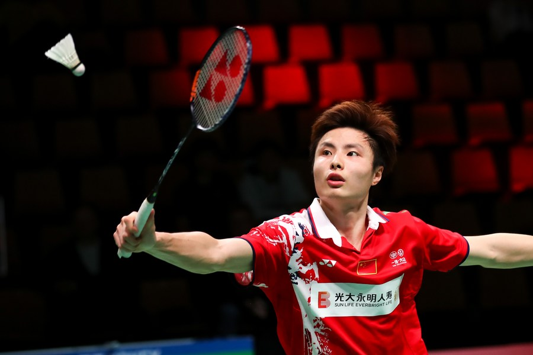
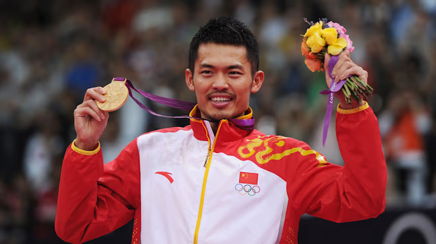
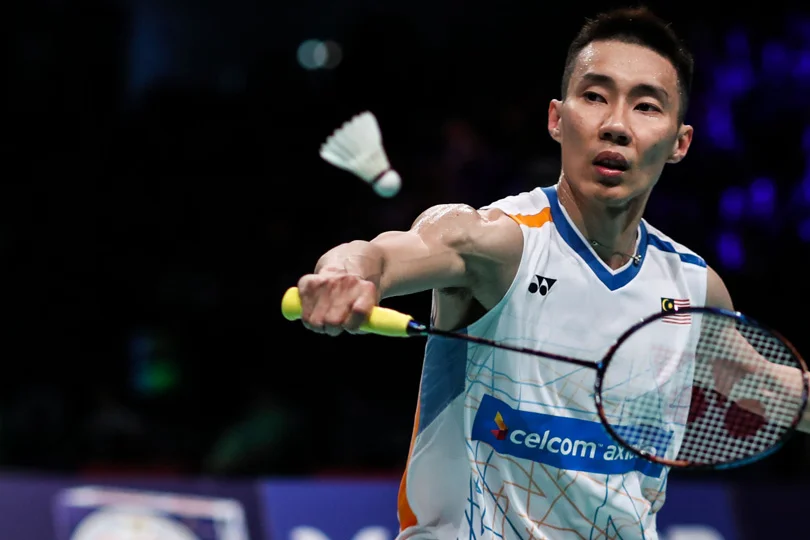

Shi Yu Qi
Shi Yuqi is a leading Chinese men’s singles badminton player known for his smooth technique, control, and tactical play. He rose to prominence after winning the All England Open in 2018, defeating top opponents and establishing himself as a major contender on the world stage. Throughout his career, Shi has been a key part of China’s team success in international competitions, including the Thomas Cup. Although his progress has been affected at times by injuries and consistency issues, he remains one of the top players of his generation with the ability to challenge the best in the world.

Lin Dan
Lin Dan is widely regarded as one of the greatest badminton players of all time, often referred to as “Super Dan” for his dominance and achievements. He is a two-time Olympic gold medalist (2008 and 2012) and a five-time World Champion, making him one of the most decorated players in the sport’s history. Known for his explosive power, speed, and mental toughness, Lin Dan had intense rivalries—especially with Lee Chong Wei—that defined an era of badminton. His career spanned over a decade at the highest level before he retired in 2020, leaving behind a legacy of excellence.

Lee Chong Wei
Lee Chong Wei is one of Malaysia’s greatest athletes and one of the most consistent badminton players ever. He held the world number one ranking for a record number of weeks and was known for his incredible speed, agility, and precision on court. Lee won numerous titles, including multiple All England championships, and earned three Olympic silver medals, often finishing just behind his rival Lin Dan. Despite never winning an Olympic gold, his consistency, sportsmanship, and influence on badminton have cemented his status as a legend of the sport.
Badminton is a sport where players use rackets to hit a shuttlecock over a net, either alone or in teams of two. Points are scored when the shuttlecock lands in the opponent’s court. It’s a fast and energetic game that emphasizes skill, speed, and strategy, making it fun for beginners and competitive players alike.